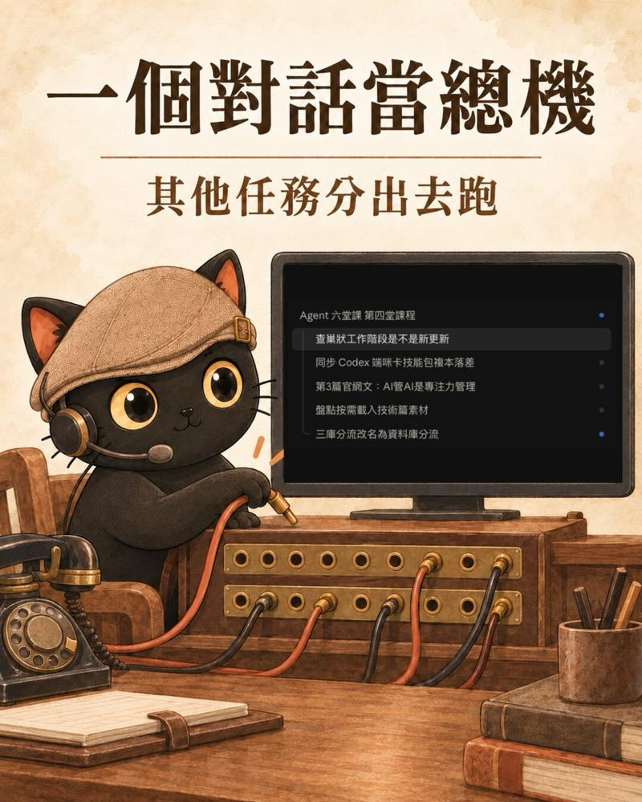
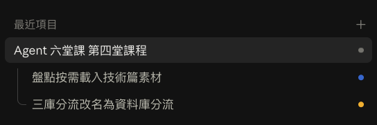
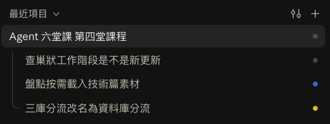
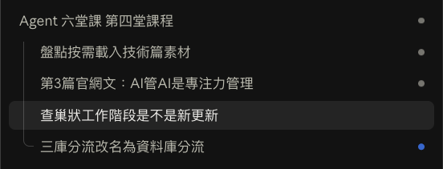
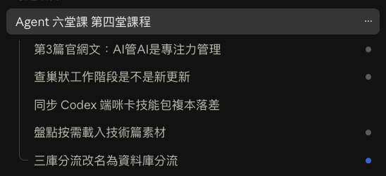

這篇在講什麼
上一篇講的是文件，這篇講 Agent。AI 可以跑的任務越來越多，但人能處理的就是這樣而已，所以要讓 AI 管 AI。這篇講我為什麼覺得這件事的核心是專注力管理，Agent 和靜態文件哪裡一樣、哪裡不同，以及我今天實際用 Claude Code 讓一個對話當總機的做法。
· 開始同時交代 AI 好幾件事，發現自己追不過來的人
· 聽過「AI 管 AI」「AI 主管管 AI 員工」，想知道實際怎麼運作的人
· 已經在整理文件給 AI 讀，想知道 Agent 跟文件有什麼不同的人
· 一張表：靜態文件和 Agent 互聯，哪裡一樣、哪裡不同
· 一個實際做法：主對話當總機，子任務做完回報
· 一段可以直接交代 AI 的話，和一條回報規則
核心是專注力管理：人的專注力有限，AI 也是
巢狀任務，就是一個任務底下再分出子任務。它其實還是連結跟互相通訊的概念。但我覺得更核心的，是專注力管理。
現在 AI 可以跑的任務越來越多了，但是人能夠處理的就是這樣子而已。人的閱讀能力是有限的，人的專注力是有限的。
讓 AI 管 AI：一個總任務管其他任務
所以要讓 AI 管 AI。讓一個總任務去管其他任務，或者是像 Grok Bot 一樣，有一個 AI 主管去管 AI 員工。
xAI 官方的 Grok Bot 使用指南裡，就有人這樣配置：作者只管一個當幕僚長的 Bot，由它管其他 Bot（Grok Bot for Post-Sales）。
分配出去、連接出去，其實就跟連結出去一樣。
- 什麼叫子代理？從分頭查資料到 30 人工作坊頁面：一個 Agent 開分身分頭做事、再收回來整併，這篇有兩個完整案例。
- AI 任務多到管不過來，下一步怎麼辦？：AI 總管來管 Agent 之後，權責要怎麼設計。
Agent 和靜態文件哪裡一樣、哪裡不同
| 靜態文件 | Agent 互聯 | |
|---|---|---|
| 連結出去 | 一份文件連到其他文件 | 一個總任務分配、連接到其他任務 |
| 分階層 | 有 | 有 |
| 漸進式載入 | 先看第一層，需要再往下讀 | 一樣 |
| 第一層放什麼 | 最核心、最高密度的資訊 | 一樣 |
| 會不會主動回報 | 不會，等人或 AI 來讀 | 會，Agent 會主動互相回報 |
在這張表裡，靜態文件跟 Agent 的差別在最後一列。前面四列都一樣：還是漸進式載入，還是分階層，還是連結出去，最核心最高密度的資訊還是擺在第一層。
實際用起來：在 Claude Code 讓一個對話當總機，其他任務分出去跑

我今天在備第四堂課，用的是 Claude Code。
主對話當總機，我一邊發想，子任務就一直開。下面是側欄在不同時間點的樣子，每一個子任務我都寫一句為什麼開。
一開始，同時分出兩個子任務

- 三庫分流改名為資料庫分流：「三庫分流」這個詞容易跟「3X4 資料整理法」搞混，而且現在也不只三庫了，所以要全庫改名。後來定名為「知識庫分流」。
- 盤點按需載入技術篇素材：我想寫一篇把 Tag Wiki 跟技能包合在一起講的技術文，要先把知識庫裡現成的素材找齊。
想到要查證，又開一個

- 查巢狀工作階段是不是新更新：我發現 Claude Code 有巢狀的工作階段，就問它這是不是新更新，結果越問越多，就直接開一個子任務專門查。
想到要寫這篇，再開一個

- 第3篇官網文：AI管AI是專注力管理：我想到巢狀工作階段的核心是專注力管理，決定另寫一篇，也就是這篇。
子任務做到一半，又分出一個

- 同步 Codex 端咪卡技能包複本落差：這個不是主對話開的。「查巢狀工作階段是不是新更新」那個子任務在做咪卡圖的途中，又分出一個。
做完回報，關鍵的事還是我點頭
子任務做完，會回報給主對話。我可以點進去看進度，也可以直接插手。上線、改規則、刪東西，還是會停下來等我點頭。
我一直發想，子任務就一直開。這就是一個實際的案例。
對照上面那張表來看：主對話就像第一層，收到的是每個子任務的回報；想看細節，再點進子任務。
Claude Code 官方文件怎麼寫工作階段之間的協作
Claude Code 桌面版的官方文件，在「Work across sessions」段寫到：Claude 可以列出 Code 分頁裡的其他工作階段、讀取它們在做什麼，在工作階段之間傳訊息；發現超出目前範圍的工作時，可以提出一個任務卡，點一下開成新的工作階段。
這一段沒有寫推出日期，也沒寫側欄裡的巢狀顯示。所以這篇不寫它是哪一天推出的。
- Claude Code 的對話視窗之間可以直接傳訊息了，但有些小限制還是要注意：工作階段之間傳訊息，傳不到哪裡、真相要認哪裡。
你可以怎麼開始：交代 AI 另開子任務
交代 AI 的時候，可以直接這樣說：
回報也可以照「最核心最高密度的資訊擺第一層」來排。我自己給 AI 的規則是，回報第一行只能三選一：完成、失敗加一句原因、卡住在等什麼。
- 3X4 資料整理法新版：三種日記我改了：同一天的第一篇，講資料怎麼分、放哪裡，AI 才找得到。
- Claude Code Mod 做任務佇列：同一個對話交代好幾件事，怎麼不讓人和 AI 都忘記。